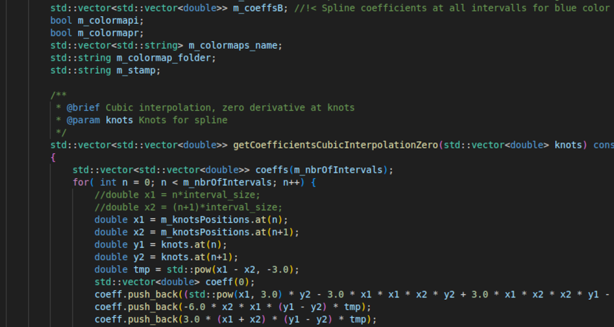

Sv
Sv
 En
En
My process
I create images by writing code that is then run and generates images. My goal is to do as much as possible myself from scratch. This is partly because I want to learn new things in the process but also to have control over and know what is happening in the computer. Therefore, I have created programs from the ground up in the programming language C++.

The idea I originally had was to create works based on mathematical functions that are based on random building blocks. For example, several images are based on randomly generated points and each pixel in the image is then given a value based on, for example, the distance to one or more points. Finally, the image is colored based on the value of each pixel and a color scale, see below.

Another example of what I do is altering images in different ways, see the image below. I do this using my own photographs.